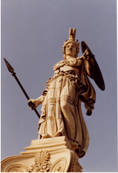

Think about the ideals you know to be associated with liberalism. If you could travel back to different times and different places, where might you expect to find societies based on those ideals? Are equality, liberty, and rule by the people purely modern concepts? What about the rule of law or freedom of religion?
Ideas, like people and nations, have a history. The origins of the liberalism we know today can be traced to many places and many times.
In this lesson, you will explore the question: How did pre-18th century societies foster and advance the basic ideals of liberalism?

So what was the earliest example of a society founded on the ideals of liberalism? If you were to assume, for a moment, that liberalism is roughly synonymous with democracy, you might be inclined to point to the ancient Greek city-state of Athens.
Democracy, as it existed in ancient Greece, can certainly be identified as the source of many ideas associated with modern democracy. The very word democracy is derived from the ancient Greek word; demos kratia, which means “the people rule”. But while the ancient Athenians did employ a form of democracy, it was not liberal democracy as we understand it today.
First, only about twelve percent of the roughly quarter of a million people that lived in the Athenian city-state had any legal right to participate in the democratic decision-making process. Only male “citizens” of Athens were eligible to attend assembly meetings. Women, foreign-borns, slaves, and many others were excluded from the process. Yet early modern democracies had similar politics. In the USA, George Washington became President in 1789 with about 6% of the population eligible to vote (white male landowners only).
As well, Athens's direct democracy required forty or more meetings of the governing assembly per year. Consequently, not all eligible citizens would attend regularly. Only a sixth of the estimated 30 000 men allowed to vote on matters of state could be expected to show up at a given meeting.
And while citizens had the right to vote on public policy, they did not have the opportunity to vote for those people who would implement the policies decided upon by the citizens’ assembly. Instead, political officers were selected by drawing lots. Although intended to limit the ability of the wealthy to influence voters, this “government by the luck of the draw” approach could not be characterized as particularly democratic.
Based on the exclusion of the vast majority of the populous from the decision-making process alone, ancient Athens was not representative of the basic principles of modern liberalism. On top of this, Athenians were allowed to keep slaves, and the rights of Athenian women were restricted. It is abundantly clear that the democracy of Greece’s Golden Age is a long way from our present understanding of liberal democracy.
Even so, the notion that the citizenry, even if it was a relatively select group, should have the power to direct the course of the state, was a radical shift from the typical rule by a king or an oligarchy. And while the Athenian democracy itself did not survive past 300 BCE, it is fair to say that the ancient Greeks planted seeds of liberalism that would germinate in the 18th century and be further cultivated in Europe and North America.
While the roots of the Western concept of liberalism may be traced back to ancient Greece, the ideals that underlie liberalism are not exclusive to Western societies. There is evidence to suggest that many societies existing in northern India prior to 400 A.D. operated under principles no less “democratic” than those of Athenian democracy. Throughout history, many other non-western societies have embraced the concepts of group decision-making and fundamental rights that are inherent to the Western understanding of liberalism. There is considerable evidence to suggest that one of these societies had a substantial influence in shaping the founding documents of one of the world’s liberal democracies, the United States.
While European thinkers contributed to liberalism around the world, the origins of liberal thought can also be traced to the practices of First Nations peoples living in North America. One of the most striking examples of this is found in the Haudenosaunee. Some say the Haudenosaunee were the first people to experience a genuinely liberal form of government.
The Haudenosaunee Confederacy, often referred to as the League of Six Nations, had a form of governing that respected the value of each individual in society. Women were equal to men. Many people in Haudenosaunee society, including women, played an important role in the function of government.
The government was made up of men who came together to represent 50 different tribes. These men were selected by many of the tribes’ women. The men who formed the government of the Haudenosaunee Confederacy met to discuss matters of mutual concern regarding the well-being of all. Everyone was allowed to bring their concerns forward to this gathering of chiefs. The chiefs followed the Great Law of Peace as their constitution.
Watch “Peacemaker,” a short video about the Haudenosaunee people. The Peacemaker had a great influence on the Great Law of Peace.
The Haudenosaunee Confederacy is a respected model for political organization. The founders of the American Constitution studied the Confederacy and consulted with the Iroquois Elders when they were developing their national laws.
According to liberal thinkers, freedom and liberty are necessary for people to develop their talents and contribute to society. Society is free only if all people are free. As well, liberals believe that all people need to be equal before the law. It does not matter if you are rich or poor; legally, everyone is to be treated the same. You will remember from reading about peasants that this was not always the case.
During the Enlightenment period in Europe in the eighteenth century, many people questioned why a king got to rule over the country’s people without challenge. That questioning led to the rule of law. The basic principle of the rule of law is that no individual is above the law. Regardless of who you are, you are responsible for your actions and you must obey the law.
As individuals began to support the rule of law, many people started to believe they were able to govern themselves and did not need a monarch or ruler. John Locke, a liberal philosopher, felt that people should be able to choose their country’s leader. He felt people should enter into a social contract with society.
Direct democracy: citizens vote on issues instead of for candidates or parties
Oligarchy: a governmental system in which power is concentrated in the hands of a small group of unelected people.
In this lesson, you have discovered that many of the ideals associated with modern liberalism found their origins in ancient societies. The ancient Greek form of democracy, though a far cry from the modern version, seeded in the minds of future champions of liberalism the important notion that the people should ultimately rule the government, not vice-versa. Societies not born of Western traditions also implemented social and governmental structures that reflect liberal ideals. In North America, the Haudenosaunee had been living under a system that incorporated aspects of liberalism long before the “birth” of European liberalism in the 18th century, and aspects of that system were borrowed by the founding fathers of the United States.
Many of the foundational ideals of liberalism have a long history. As you will see in the next lesson, these ideals were revived and elaborated on by individuals who were aware of the precedents set in ancient Athens and by the Haudenosaunee.
God alone knows the future, but only a historian can alter the past. - Ambrose Bierce
History is always written wrong, and so always needs to be rewritten. - George Santayana
The degree to which the Haudenosaunee approach to liberalism and democracy influenced the founding fathers of the United States is still a matter of some debate. Until recently, most school textbooks and scholarly journals made little, if any, reference to the Haudenosaunee as a major influence on the structure of the U.S. governmental system. Some conservative commentators point to recent efforts to credit the Haudenosaunee influence as “political correctness” and “revisionist history”. They argue that history is being changed in a campaign to put a more multicultural face on America. Liberal academics and commentators generally respond that, due to ethnocentric attitudes, Americans have historically ignored the pivotal role the Haudenosaunee played in the shaping of the governmental system. They would argue that they are not ‘creating a false history’ but instead are ‘setting the record straight’.
You may wish to explore this debate further and consider the arguments that both sides make. Combine “revisionist history” and “political correctness” some of the search terms in your list and see what comes back.